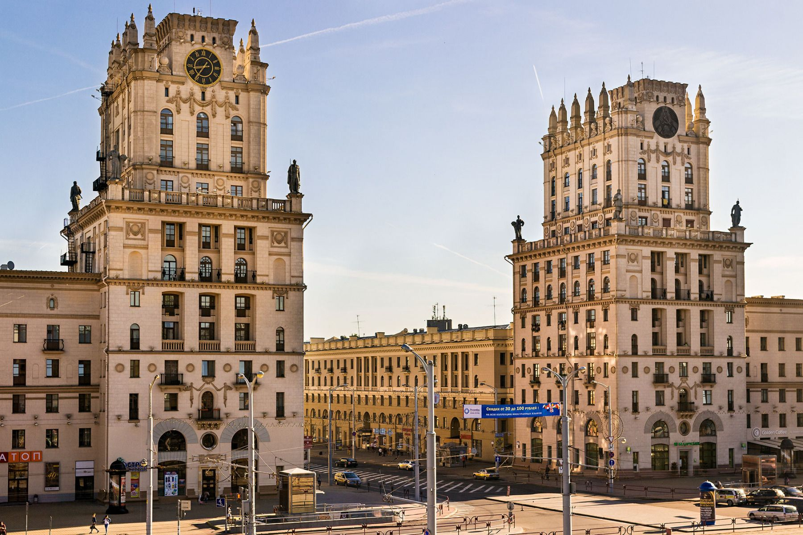

Минск
Столица Беларуси сочетает в себе советскую архитектуру и современные урбанистические решения. Обязательно посетите Троицкое предместье и Национальную библиотеку.
Открой для себя красоту родного края
Беларусь - страна с богатой историей, уникальной природой и гостеприимными людьми. Этот проект создан для тех, кто хочет открыть для себя красоту родного края и найти интересные маршруты для путешествий.
Здесь вы найдете проверенные места, полезные советы и вдохновение для ваших следующих приключений.
Столица Беларуси сочетает в себе советскую архитектуру и современные урбанистические решения. Обязательно посетите Троицкое предместье и Национальную библиотеку.

Легендарная крепость-герой, символ мужества и стойкости. Мемориальный комплекс сохраняет память о защитниках Отечества.
Древний первобытный лес, объект Всемирного наследия ЮНЕСКО. Здесь можно увидеть зубров в естественной среде обитания.

Великолепный дворцово-замковый комплекс рода Радзивиллов. Архитектурный шедевр с богатой историей и прекрасными парками.
Продолжительность: 3 дня
Маршрут включает посещение Мирского и Несвижского замков, внесенных в список Всемирного наследия ЮНЕСКО.
Продолжительность: 2 дня
Исследуйте природные богатства Беларуси: от Беловежской пущи до Браславских озер.
Продолжительность: 4 дня
Погрузитесь в богатую историю Беларуси, посетив ключевые исторические места страны.
Для междугородних поездок удобно использовать железнодорожный транспорт. Внутри городов - общественный транспорт и такси.
Бронируйте жилье заранее, особенно в летний сезон. В Беларуси хороший выбор гостиниц, агроусадеб и хостелов.
Обязательно попробуйте национальную кухню: драники, колдуны, мачанка. В городах много кафе с демократичными ценами.
Удобную обувь для прогулок, зонт, фотоаппарат. В летнее время - средства от насекомых для поездок в лесные зоны.